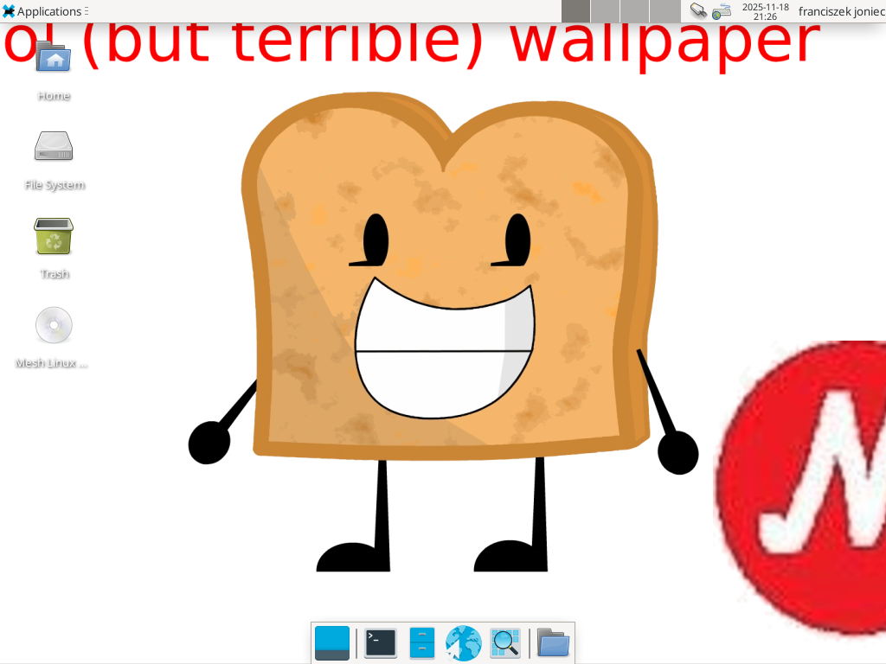

Versions:
0.9 (Project Toast, Codenamed Crazy).Information about Mesh Linux:
Mesh Linux is a linux distro designed for laptops, desktops, x86 tablets, Raspberry Pi 5 and ARM64 tablets. it does NOT matter if it has either a sim card slot or not. It is actually based on Debian but there are features: Dualbooting between GNOME and Phosh on the lock screen. Chromium Web Browser - You can switch between Firefox and Chromium. Chromium is optional to access all websites.
- We ditched Phosh, GNOME and replaced it with XFCE4 which makes it super easy to make our new wallpaper as default
- Optimized for touchscreen tablets, touchscreen laptops, non-touchscreen laptops and desktop computers - Onboard pre-installed onto this syste
Example screenshot of Mesh Linux 0.9 Crazy (One of the most recommended and famous linux distros for desktop PCs and laptops.
